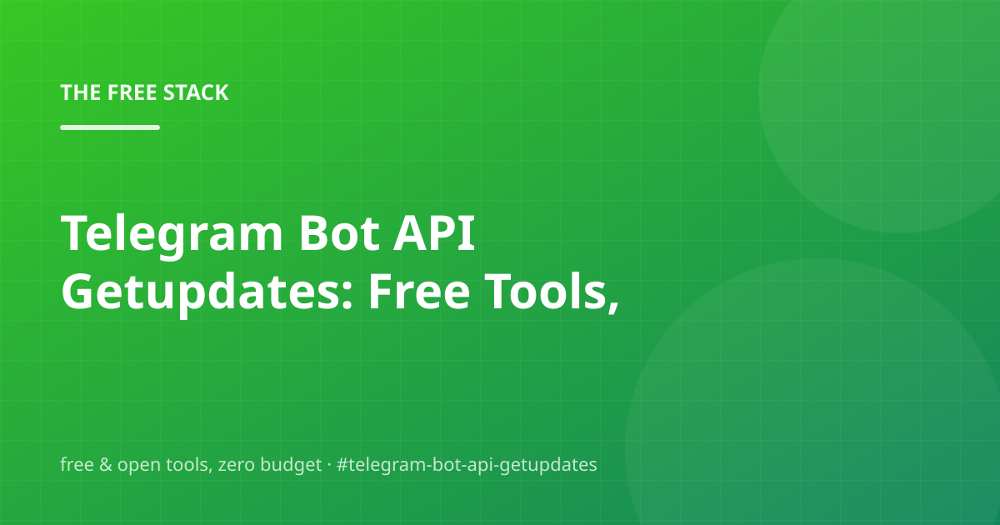

Tag: telegram
Everything the engine has published under telegram (2 posts).

How to Get Telegram Bot API Send Message Without Spending a Dollar
What does Telegram Bot API Send Message cost in 2026 (spoiler: nothing), and how do you set it up properly? Covers free tiers, open-source alternatives and…

Telegram Bot API Getupdates: Free Tools, Real Trade-offs
What does Telegram Bot API Getupdates cost in 2026 (spoiler: nothing), and how do you set it up properly? Covers free tiers, open-source alternatives and…